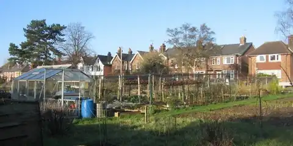

Fechas de helada para Edmonton, Canadá
En la mitad de los años, la última helada de primavera llega a más tardar el 7 de mayo, pero 1 año de cada 10 todavía hiela después del 20 de mayo.
El trazo claro son unos 142 días sin heladas, en la mitad de los años.
De la estación meteorológica de Edmonton Blatchford, a 3 km (2 millas), 24 inviernos · Prometedor
Cómo leer esto
- El trazo claro es la temporada sin heladas.
- La línea con marcas es cuando es probable que hiele: más marcas, más probable.
- Se lee en el sentido de las agujas del reloj desde enero, abajo, con el pleno verano arriba.
La estación meteorológica de Edmonton City Centre AWOS, a 3 km (2 millas) de Edmonton, registró una helada en 10 de sus 10 inviernos registrados de 1991 a 2020. Las fechas son las de la estación meteorológica de Edmonton Blatchford, a 3 km (2 millas) de Edmonton, sacadas de 24 años de sus temperaturas mínimas diarias en los registros GHCN-Daily de NOAA. Su registro es el más largo. Las hondonadas y los terrenos bajos cerca de tu huerto pueden helar más tarde en primavera y más temprano en otoño que la estación de Edmonton Blatchford.
Las fechas del modelo meteorológico para Edmonton: última helada hacia el 10 de mayo.
En realidad, una fecha de helada es un percentil, aquí sacado de 24 años (1991 a 2020) de temperaturas mínimas diarias de una estación meteorológica
en más o menos la mitad de los años todavía llega una helada después de la fecha mediana. Los dos números están abajo, para que elijas tú cuánto riesgo tomar.
Las probabilidades
Última helada de primavera
Con qué frecuencia todavía hiela en cada fecha o después.
- 1 año de cada 10
- 20 de mayo
- 1 año de cada 5
- 14 de mayo
- 3 años de cada 10
- 10 de mayo
- 2 años de cada 5
- 10 de mayo
- La mitad de los años (la mediana)
- 7 de mayo
Primera helada de otoño
Con qué frecuencia la primera helada llega en cada fecha o antes.
- 1 año de cada 10
- 14 de septiembre
- 1 año de cada 5
- 19 de septiembre
- 3 años de cada 10
- 23 de septiembre
- 2 años de cada 5
- 27 de septiembre
- La mitad de los años (la mediana)
- 30 de septiembre
- Temporada de cultivo
- unos 142 días
- Zona de rusticidad cercana
- 3b, estimada con el modelo meteorológico
- Días de verano
- una máxima habitual de unos 22 °C71 °F
Calor de verano
Mes a mes
La máxima y la mínima habituales de cada mes en Edmonton, Canadá
La máxima y la mínima habituales de cada mes, de 23 °C73 °F a -16 °C3 °F
- enero
- máx. ~-8 °C18 °F · mín. ~-16 °C3 °F
- febrero
- máx. ~-4 °C24 °F · mín. ~-14 °C7 °F
- marzo
- máx. ~1 °C33 °F · mín. ~-9 °C15 °F
- abril
- máx. ~10 °C50 °F · mín. ~-2 °C29 °F
- mayo
- máx. ~17 °C62 °F · mín. ~5 °C41 °F
- junio
- máx. ~20 °C68 °F · mín. ~10 °C50 °F
- julio
- máx. ~23 °C73 °F · mín. ~13 °C55 °F
- agosto
- máx. ~22 °C72 °F · mín. ~12 °C53 °F
- septiembre
- máx. ~17 °C63 °F · mín. ~7 °C45 °F
- octubre
- máx. ~9 °C48 °F · mín. ~0 °C33 °F
- noviembre
- máx. ~-1 °C31 °F · mín. ~-8 °C17 °F
- diciembre
- máx. ~-6 °C20 °F · mín. ~-15 °C6 °F
De la estación meteorológica de Edmonton Blatchford, a 3 km (2 millas), 24 inviernos · Prometedor
Las fechas de helada propias de una estación meteorológica, con calificación Prometedor. Sus fechas vienen de la estación meteorológica de Edmonton Blatchford, a 3 km (2 millas), con 24 años completos de temperaturas mínimas diarias.
Si conoces tus propias fechas de helada, escríbelas bajo tu lugar en la página Planificar, y tus planes usarán las tuyas, con estas al lado. Mira de dónde vienen las fechas de cada ciudad en el mapa de cobertura.
Las fechas de helada son de una estación meteorológica. Salen de los registros diarios GHCN-Daily de NOAA para la estación de Edmonton Blatchford (CAN03012209), a 3 km (2 millas) de Edmonton: Milpa leyó sus temperaturas mínimas diarias de 1991 a 2020 y, en cada uno de los 24 años que registró completos, la última noche de primavera y la primera noche de otoño a 0 °C (32 °F) o menos.
Una estación meteorológica mide un solo lugar, así que el terreno a su alrededor puede ser distinto: una hondonada donde se acumula la helada, una ladera, la orilla de un lago, el calor propio de una ciudad. El planificador de Milpa lee estas mismas fechas para un huerto de aquí y les da la calificación Prometedor.
El conteo de heladas es de una estación meteorológica. Sale de los registros diarios de la Red Climatológica Histórica Global de NOAA (GHCN-Daily) para la estación de Edmonton City Centre AWOS (CAN03012202), a 3 km (2 millas) de Edmonton. Un invierno cuenta cuando la estación registró sus tres meses más fríos, y es un invierno con helada cuando una de sus noches bajó a 0 °C (32 °F) o menos.
El modelo meteorológico, para comparar. Sus fechas de helada para Edmonton salen de ERA5, una reconstrucción del tiempo de todo el mundo de 1991 a 2020 hecha por el ECMWF, la agencia europea de previsión meteorológica a plazo medio, para el programa Copernicus de la UE, y leída aquí a través de Open-Meteo: sus temperaturas mínimas diarias para el punto en 53.75, -113.75, a 27 km (17 millas) del centro de Edmonton.
Además, el aire frío se acumula en las zonas bajas en las noches despejadas y en calma en que hiela, así que una hondonada puede helarse mientras una ladera a cien metros no. Ninguna tabla puede saber eso de tu huerto. Las heladas que registres durante unas cuantas temporadas, sí.
Las máximas y mínimas de esta página son las del modelo meteorológico. Donde una ciudad tiene su propia estación meteorológica, las máximas diurnas del modelo marcan unos 1.4 °C2.5 °F menos que las de la estación, así que una racha de calor puede empezar antes y acabar después de lo que muestra esta página.
Conteos y fechas de helada de GHCN-Daily, versión 3.35-upd-2026101817, de los Centros Nacionales de Información Ambiental de NOAA (NCEI), citados como pide NCEI: Menne, Matthew J., Imke Durre, Bryant Korzeniewski, Shelley McNeill, Kristy Thomas, Xungang Yin, Steven Anthony, Ron Ray, Russell S. Vose, Byron E.Gleason, and Tamara G. Houston (2012): Global Historical Climatology Network - Daily (GHCN-Daily), Version 3. Daily minimum temperature (TMIN), stations outside the United States, 1991-2020. NOAA National Climatic Data Center. doi:10.7289/V5D21VHZ. Accessed 2026-10-20.
Datos meteorológicos de Open-Meteo.com, con licencia CC BY 4.0. Contiene información modificada del Servicio de Cambio Climático de Copernicus, 2026.
Meses secos de CHIRPS (Climate Hazards Center, UC Santa Barbara), de dominio público, contrastados con GPCC (Deutscher Wetterdienst), bajo CC BY 4.0.
Qué hacer con estas fechas
 Fechas de helada, zonas de rusticidad y duración del díaTus fechas de helada: cuándo sembrar todo lo demás
Fechas de helada, zonas de rusticidad y duración del díaTus fechas de helada: cuándo sembrar todo lo demás Cómo hacer que las semillas brotenSiembra según el suelo, y deja el calendario de lado
Cómo hacer que las semillas brotenSiembra según el suelo, y deja el calendario de lado Cómo trasplantar plántulasPrimero, aclimátala
Cómo trasplantar plántulasPrimero, aclimátala
Cuándo cosechar y cómo hacer que la cosecha dureEl curado: la pausa que te da los meses
Créditos de las fotos
Fechas de helada, zonas de rusticidad y duración del día. Foto: Colin · CC BY-SA 3.0, vía Wikimedia Commons.
Cómo hacer que las semillas broten. Foto: Vraj Acharya, WELL Labs · CC BY-SA 4.0, vía Wikimedia Commons.
Cómo trasplantar plántulas. Foto: USDAgov · Dominio público, vía Wikimedia Commons.
Cuándo cosechar y cómo hacer que la cosecha dure. Foto: Sebastian Ballard · CC BY-SA 2.0, vía Wikimedia Commons.


.jpg){kind=link}

Qué crece aquí
79 de nuestras 129 plantas encajan en Edmonton, y 12 más con un poco de cuidado.
Encajan aquí · 79
Hortalizas de fruto · 7, Ensaladas y hojas verdes · 11, Raíces y tubérculos · 7, Frijoles y arvejas · 9, Cebollas y ajos · 4, Hortalizas perennes · 2, Hierbas · 10, Frutas y bayas · 8, Flores · 11, Cultivos de cobertura y mejoradores del suelo · 10
Hortalizas de fruto · 7
Ensaladas y hojas verdes · 11
Frijoles y arvejas · 9
Cebollas y ajos · 4
Flores · 11
+3 másMostrar menos
Cultivos de cobertura y mejoradores del suelo · 10
Encajan con cuidado · 12
Aquí ningún mes tiene una media de los 18 °C65 °F o así en los que crece, así que al aire libre es poco probable que llegue a la cosecha. Lo mejor es darle cubierta (por qué) · 8
Aquí solo tiene julio y agosto con los 16 °C60 °F o así en los que crece, menos que los 3 meses seguidos que necesita. Empieza pronto en interior, elige una variedad rápida o dale cubierta (por qué) · 1
Aun contando hasta la primera helada fuerte, la temporada aquí (147 días) es más corta de lo que necesita, así que siémbrala temprano en primavera o elige una variedad más rápida (por qué) · 1
La cebolla forma bulbo según la duración del día: tan lejos del ecuador, cultiva cebollas de día largo (por qué) · 1
Los inviernos aquí (zona 3b) son más fríos de lo que aguanta (por qué) · 1
Ciudades cercanas
Las ciudades más cercanas con página de heladas aquí, y cómo se comparan sus fechas de última helada.
- Calgary, Canadáúltima helada a más tardar el 22 de mayo
- Vancouver, Canadáúltima helada a más tardar el 27 de febrero
- Tijuana, Méxicolas heladas son raras
- Ciudad Juárez, Méxicoúltima helada a más tardar el 5 de marzo
Otras ciudades de Canadá.
- Toronto, Canadáúltima helada a más tardar el 2 de mayo
- Ottawa, Canadáúltima helada a más tardar el 29 de abril
- Montreal, Canadáúltima helada a más tardar el 19 de abril
¿Cuándo siembro? · De dónde vienen las fechas
Más formas en que Milpa te ayuda
¿Cuándo siembro? · ¿Qué plantas crecen bien juntas? · ¿Qué puedo sembrar ahora? · ¿Algo anda mal en el huerto? · ¿Te dieron un consejo?
Con una cuenta gratis: Planifica tu huerto · Llevar un diario del huerto
Todas las ubicaciones · Fechas de helada en Canadá · Todas las plantas